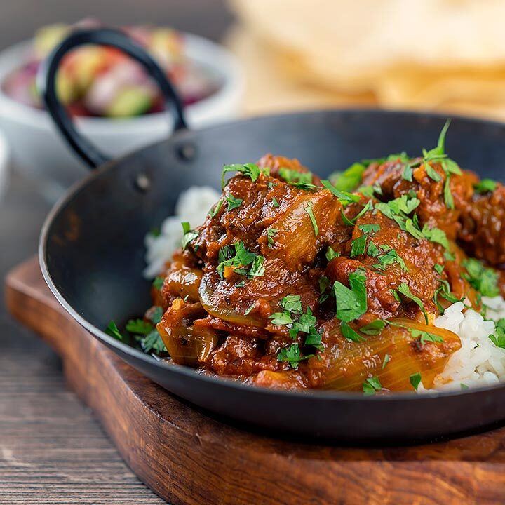

Authentic Bangladeshi Beef Curry

Description:
This spicy beef curry is best served with plain
basmati rice or eaten with naan or pita bread.
Author: Maisha Dewan
Servings : 6
Prep Time: 30 mins
Cook Time: 1 hr 45 mins
Total Time: 2 hrs 15 mins
Ingredients:
- 3 tablespoons olive oil
- 1 onion, chopped
- 6 cloves garlic, minced
- 5 green chile peppers, finely sliced
- 1 teaspoon ginger paste
- 3 whole cardamom seeds
- 2 whole cloves
- 1½ (2 inch) cinnamon sticks
- 1 teaspoon ground cumin
- 1 teaspoon ground coriander
- 1 teaspoon ground turmeric
- 1 teaspoon garlic powder
- 1 teaspoon cayenne pepper
- 1 cup water
- 2 pounds boneless beef chuck, cut into 1-1/2-inch pieces
Steps:
- Heat olive oil in a skillet over medium heat. Add onion;
cook and stir until the onion has softened and turned translucent,
about 5 minutes.
- Reduce heat to medium-low and continue cooking and stirring until
the onion is very tender and dark brown, 15 to 20 minutes more.
- Stir in the garlic, green chiles, ginger paste, cardamom seeds, cloves,
and cinnamon sticks. Cook and stir until the garlic begins to brown,
3 to 5 more minutes.
- Mix cumin, coriander, turmeric, garlic powder, cayenne pepper,
and water into the onion mixture. Simmer until most of the water has
evaporated and the mixture has thickened.
- Stir in beef chuck pieces until coated with spice mixture;
simmer over medium-low heat, stirring occasionally, until the beef
is cooked through and tender, about 1 to 1 1/2 hours.
Editor's Note:
Use 5 to 6 small green chile peppers, such as Thai chiles;
if they're unavailable, substitute 2 to 3 serrano chiles or to taste.
Use rubber gloves when chopping chile peppers.
Nutrition:
Per Serving: 320 calories; protein 19.5g; carbohydrates 8.8g; fat 23.1g; cholesterol 68.6mg; sodium 50.4mg.
Link to original recipe